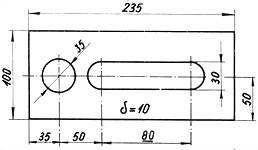
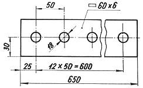
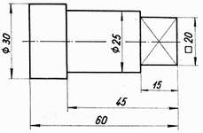
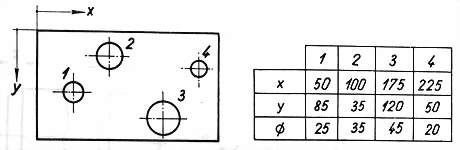
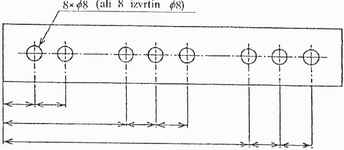

Pri zaporednem kotiranju so mere ali kote nanešene druga za drugo. To kotiranje uporabljamo pri jeklenih konstrukcijah in tistih strojnih delih, kjer odstopanja pri posameznih merah nimajo posebnega vpliva.
Poenostavljeno zaporedno kotiranje:
Mere, ki se ponavljajo, lahko kotiramo poenostavljeno. Navedemo število ponovitev mere in to pomnožimo s številom delitev. Rezultat je skupna dolžina oziroma mera. Dolge predmete s konstantnim prerezom rišemo skrajšane.
|  |  |
| Slika 1 | Slika 2 |
Vzporedno kotiranje:
Valjaste predmete, ki jih stružimo, kotiramo od desnega roba, saj poteka struženje v tej smeri.
Poenostavljeno vzporedno kotiranje:
V zporedno kotiranje lahko poenostavimo. Skupno izhodièe lahko oznaèimo s toèko, ob kateri zapišemo koto 0. Ostale kote pišemo na koncih pomožnih kotirnih èrt. Krivulje kotiramo poenostavljeno tako, da združimo (glavne) kotirne in pomožne kotirne èrte.
|  |  |
| Slika 3 | Slika 4 |
Kotiranje s pomoèjo koordinat:
Položaje izvrtin lahko tudi podamo s pomoèjo koordinat x in y v pravokotnem koordinatnem sistemu. Koordinate izvrtin so podane skupaj s premeri teh izvrtin v tabeli.

Slika 5
Kombinirano kotiranje:
Pri tem naèinu kotiranja uporabljamo tako zaporedni kot tudi vzporedni naèin kotiranja.

Slika 6
1. Vprašanja za usmerjanje pozornosti in usvajanje novih besed:
1. Katero vrsto kotiranja kaže slika 1?
2. Katero vrsto kotiranja kaže slika 2?
3. Katero vrsto kotiranja kaže slika 3?
4. Katero vrsto kotiranja kaže slika 4?
5. Katero vrsto kotiranja kaže slika 5?
6. Katero vrsto kotiranja kaže slika 6?
7. Na kateri od slik v tej uèni enoti vidimo dolg predmet s konstantnim prerezom, ki je narisan skrajšano?
2. Zapiši od ene do pet kljuènih besed, ki povzemajo vsebino te uène enote.
3. Vprašanja za razmislek, ponavljanje in povezovanje z lastno izkušnjo:
1. Na katerih dveh od slik v tej uèni enoti vidimo struženi izdelek, torej izdelek krožnega prereza?
2. Na kateri od slik v tej uèni enoti vidimo koordinatni sistem?
3. Za kateri koordinatni sistem gre v prejšnjem vprašanju?
4. Izraèunaj število izvrtin v izdelku na sliki 2? Pomagaj si s podatki, ki ti jih ponuja naèin kotiranja.
4. Domaèa naloga:
V enem do petih stavkih zapiši, kaj ti je v tej uèni enoti najbolj ostalo v spominu.